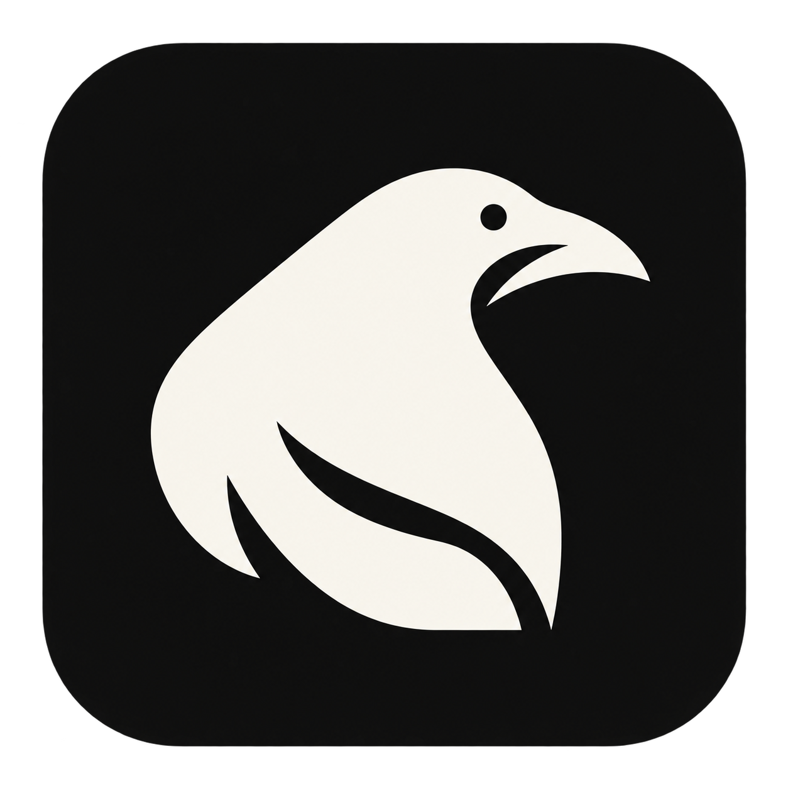

Work that resumes.
Bring a task, draft, browser page and saved reference into one compact workspace. Leave with a result you can keep.
Today · Planning · Writing · Browser
theonan open projectFOR MAC · OPEN SOURCE · EARLY DAYS
Work, learning, and the rest of life belong together. Theon gives them a private home—with room for the tools and AI you choose.
macOS · Apple Silicon · MIT original code
Source available. Public notarized download still to come.
01 / A MORE CONNECTED DAY
Theon already has breadth. We’re building depth: dependable paths from saved context to something useful, learned, or enjoyed.
Bring a task, draft, browser page and saved reference into one compact workspace. Leave with a result you can keep.
Today · Planning · Writing · BrowserChoose a skill, read with context, attempt it independently and return for a delayed check. Collecting lessons is only the beginning.
Reader · Skill trees · PracticeNotice elapsed time and observed app use. Compare your week with chosen results, with gaps in coverage made visible.
Today · Week · Time & attentionKeep useful context for relationships, meals, training, trips and your personal library. Ordinary enjoyment belongs here too.
People · Health · Trips · LibraryKeep photos, videos, links, notes and documents in Spaces. Correct local sorting and reopen the material that matters to you.
Spaces · Capture · SearchUse optional assistance with selected context and inspect saved changes. Provider choices and media support are still growing.
Selected sharing · Actions · UndoTHE DIRECTION
A super app should make life easier to pick up.
We’re earning that, one complete workflow at a time.
02 / SMALL TOOLS, USEFUL POSSIBILITIES
Three working starters, made by Theon. The plugin community starts here—with open code and a clear way to contribute.
Give one important task a quiet, timed work session. Pause, close and return.
Inspect the code ↗A small writing space for a rough thought or your next step. Save locally and export.
Inspect the code ↗Turn a chosen idea into a question. Try an answer before revealing it.
Inspect the code ↗Settings → Plugins → Add → Connect community catalogue
https://jevangoldsmith.com/theon/plugins/catalogue.jsonPlugins have isolated browser storage and no vault or Node access. Network permission is optional. Listing and checksums are not a security audit; inspect permissions before enabling.
03 / BUILD IN THE OPEN
You don’t have to build a whole feature. Reproduce a bug, improve a guide, finish a rough edge, or create one small tool you wish existed.
Join the conversation ↗Start from a real difficulty and an observable result.
Copy a working starter. Install locally. Publish an immutable version.
Share source, license, permissions and checked behavior for review.
A clean local build and a small, reviewable first change.